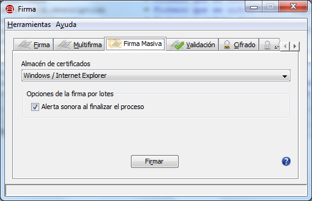
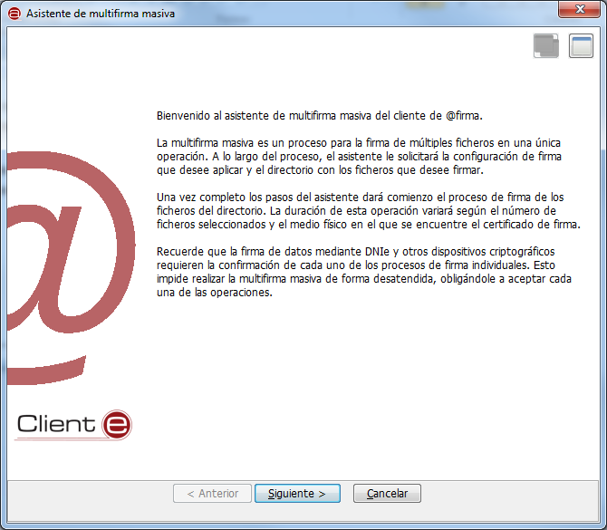
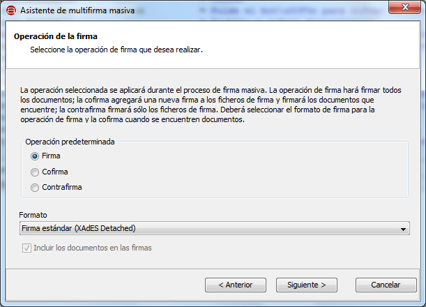
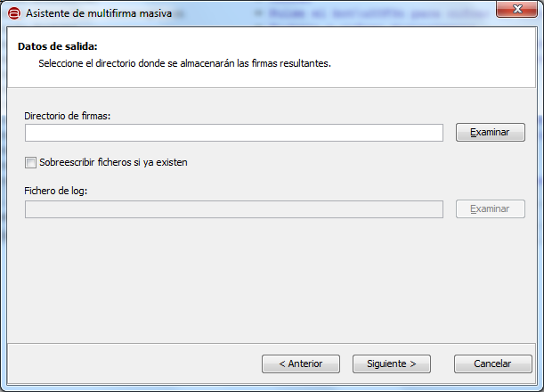
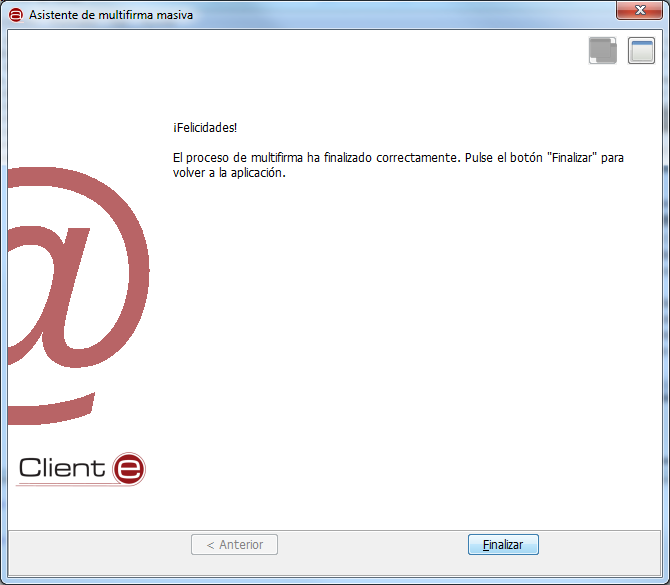

Desde la ventana de "Firma masiva" es posible realizar firmas y multifirmas en bloque. Esto implica ordenar
una operación de firma que afectará a múltiples ficheros y generará un nuevo fichero de firma para cada uno de ellos.
Esta opción sólo está disponible en el modo de vista avanzada.
IMPORTANTE: El DNIe exige que el usuario acepte individualmente toda y cada una de las firmas individuales del
proceso de firma masiva.

Las opciones que se muestran en esta pantalla son:
- Almácen de certificados.
- Permite seleccionar el almacén en donde se encuentra el certificado que deseamos utilizar para realizar la
firma. Las opciones disponibles son:
- Windows / Internet Explorer: Para tomar el certificado del almacén de Windows o un dispositivo externo
(por ejemplo, el DNIe) instalado en el sistema.
- Mozilla Firefox (unificado): Para tomar el certificado del almacén de Firefox o un dispositivo externo
(por ejemplo, el DNIe) configurado en este almacén.
- PKCS#12 / PFX: Para tomar el certificado de un almacén en disco en formato P12 o PFX.
- Tecla de acceso rápido: a
- Opciones de la firma por lotes.
- Alerta sonora al finalizar el proceso: Utiliza el beep del sistema para emitir un sonido una vez finaliza el
proceso de firma masiva.
- Tecla de acceso rápido: l
Al pulsar el icono de ayuda se muestra la ventana de ayuda para el menú "Firma Masiva".
- Tecla de acceso rápido para el botón de Ayuda: h
Al pulsar el botón "Firmar" se abrirá el asistente para finalizar la configuración de la operación de multifirma masiva.
- Tecla de acceso rápido para el botón "Firmar": r

Al pulsa el botón "Siguiente >", nos aparece una nueva ventana donde se nos explica el proceso según la operación
de firma seleccionada y se nos permite configurar tanto esta como el formato de firma.

Las opciones de configuración son:
- Operación predeterminada:
- Firma: Firma cada uno de los ficheros del lote usando el formato de firma seleccionado.
- Tecla de acceso rápido: f
- Cofirma: Cofirma todos los ficheros de firma del lote y firmará con el formato seleccionado todos
aquellos que no sean.
- Tecla de acceso rápido: o
- Contrafirma: Contrafirmará todos los ficheros de firma del lote.
- Tecla de acceso rápido: n
- Formato:
Formato de firma utilizado cuando se solicita la operación de firma, o cuando se
solicita la operación de cofirma y se encuentran documentos de datos.
- Tecla de acceso rápido: t
- Incluir los documentos en las firmas: Selecciona el modo en el que se va a firmar un documento cuando se selecciona el formato CAdES.
- Tecla de acceso rápido: i
Cuando se pulsa el botón "Siguiente >" nos desplazamos a una nueva pantalla del asistente. Desde esta nos es posible
establecer configuraciones adicionales sobre el formato de firma y los nodos que deben contrafirmarse. Si se seleccionó la
operación de firma, no se mostrará la pantalla mostrada a continuación, sino la siguiente, y si se seleccionó la operación
de cofirma no se mostrarán las opciones para la configuración de la contrafirma sólo parecerá cuando se seleccione esta
operación.

Las opciones configurables en esta pantalla son:
- Respetar el formato de firma
- Si no se activa esta casilla, se considerará que cualquier fichero del lote no acorde al formato de firma indicado
en el paso anterior es un fichero de datos. En caso de marcarla y cuando la operación seleccionada sea cofirma o
contrafirma, se comprobará para cada fichero del lote si es un formato de firma soportado y, en caso de serlo, se
multifirmará en el formato correspondiente.
- Tecla de acceso rápido: r
- Opciones de contrafirma:
- Nos permite indicar que firmas del fichero deben contrafirmarse. Las opciones son:
- Contrafirmar todas las firmas: Agrega una contrafirma a cada firma del fichero.
- Tecla de acceso rápido: o
- Contrafirmar únicamente los últimos firmantes: Agrega una contrafirma a todas aquellas firmas que no tuvieran
una previamente.
- Tecla de acceso rápido: n
Al pulsar el botón "Siguiente >" accederemos a una nueva ventana desde la que podemos configurar los ficheros que pertenecerán
al lote de firma.

Las opciones de configuración son:
- Directorio con los ficheros de datos.
- Aquí podemos indicar el directorio en donde se encuentran los ficheros con los que queremos operar. Podemos introducir la ruta
en la caja de texto correspondiente o pulsar el botón "Examinar" para buscar el directorio en el sistema del usuario.
- Tecla de acceso rápido: d
- Tecla de acceso rápido al botón Examinar: e
- Incluir subdirectorios de forma recursiva.
- Al seleccionar esta casilla se incluirán en el lote de firma todos los ficheros de los subdirectorios de aquel que hemos
seleccionado.
- Tecla de acceso rápido: i
- Aplicar sólo a los ficheros con extensión:
- En esta caja de texto podemos introducir las extensiones, separadas por comas (','), de los ficheros que deseamos que se incluyan
en el lote de firma. Por ejemplo, con la cadena "txt,pdf" sólo entrarían en el lote los ficheros "txt" y "pdf" del
directorio seleccionado.
- Tecla de acceso rápido: p
Al pulsar el botón "Siguiente >" se nos mostrará una nueva ventana desde la que podremos seleccionar el directorio en donde se
almacenarán las firmas generadas.

Las opciones configurables en esta pantalla son:
- Directorio de firmas.
- Aquí podemos indicar el directorio en donde se encuentran los ficheros con los que queremos operar. Podemos introducir la ruta en
la caja de texto correspondiente o pulsar el botón "Examinar" para buscar el directorio en el sistema del usuario
- Tecla de acceso rápido: d
- Tecla de acceso rápido al botón Examinar: e
- Sobrescribir ficheros si ya existen.
- Si marcamos esta casilla se sobrescribirá cualquier fichero que exista en el directorio de salida con el mismo nombre que alguno de
los ficheros que ya existen. Si no se marca la casilla se agregará un número en serie al nombre del fichero. Si por ejemplo: se fuese
a generar el fichero "firma.csig" y ya existiese uno con este nombre, se crearía "firma(1).csig"; si este también existiera se crearía
"firma(2).csig" y así sucesivamente.
- Tecla de acceso rápido: o
- Fichero de log.
- Este es el fichero que se creará y mostrará el resultado de la operación masiva. Todos los errores que se hayan producido durante el
proceso vendrán listados en este fichero. Podemos introducir la ruta en
la caja de texto correspondiente o pulsar el botón "Examinar" para buscar el fichero en el sistema del usuario.
- Tecla de acceso rápido: f
- Tecla de acceso rápido al botón Examinar: x
Al pulsar el botón "Siguiente >" se dará a elegir el certificado de firma y se ejecutará la operación.
Una vez finalizada se mostrará la siguiente ventana.

Pulse el botón "Finalizar" para volver a la pantalla principal de la aplicaci&oacuyte;n.
Teclas de acceso rápido para los botones:
- Maximizar ventana: m
- Anterior: a
- Siguiente: s
- Cancelar: c
- Finalizar: f